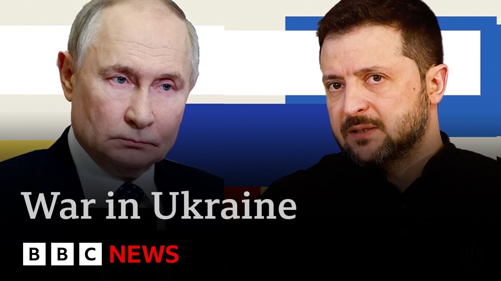

【泽连斯基在特朗普总统施压后挑战普京本周会面 | BBC新闻】
Summary: President Zalinski has agreed to meet Putin in Istanbul on Thursday for Ukraine war talks, dropping his ceasefire demand after pressure from Trump, though Putin's attendance remains uncertain amid deep divisions between both sides.
摘要： 泽连斯基总统同意周四在伊斯坦布尔与普京会面讨论乌克兰战争，在特朗普施压下放弃了停火要求，但普京是否出席仍不确定，双方分歧依然很深。

⏱️ Estimated Reading Time: 5 min
President Zalinski has said he's ready to meet Vladimir Putin in Istanbul on Thursday for talks on ending the Ukraine war.
泽连斯基总统表示，他已准备好周四在伊斯坦布尔与普京会面，讨论结束乌克兰战争。
Mr. Zalinski had previously said a full ceasefire should begin ahead of any talks.
泽连斯基此前曾表示，任何谈判前都应先全面停火。
But after coming under pressure from Donald Trump this evening, he dropped that demand.
但在今晚受到特朗普施压后，他放弃了这一要求。
Mr. Trump insisted that talks should take place without delay to determine whether a peace deal was possible.
特朗普坚持认为应立即举行会谈，以确定是否可能达成和平协议。
Mr. Putin proposed the direct talks, the first since 2022, but didn't specify whether he would attend.
普京提议自2022年以来首次直接会谈，但未明确表示是否会出席。
From Kiev, here's Frank Gardner.
来自基夫的弗兰克·加德纳报道。
It was all going so well for Ukraine.
对乌克兰来说一切原本进展顺利。
To Kee, they came.
他们来到了基夫。
Leaders of some of Europe's most important countries with an ultimatum for Russia, sign up to a ceasefire on Monday or face new sanctions.
欧洲一些最重要国家的领导人向俄罗斯发出最后通牒，要求周一签署停火协议，否则将面临新制裁。
But Vladimir Putin has other ideas.
但普京另有打算。
Instead of a ceasefire, direct talks Russia and Ukraine in Istanbul next Thursday.
他提议下周四在伊斯坦布尔举行俄乌直接会谈，而非停火。
But would President Trump insist on that ceasefire?
但特朗普总统会坚持要求停火吗？
President Putin of Russia doesn't want to have a ceasefire agreement with Ukraine, he wrote, but rather wants to meet on Thursday in Turkey to negotiate a possible end to the bloodbath.
他写道，俄罗斯总统普京不想与乌克兰达成停火协议，而是希望周四在土耳其会面，商讨如何结束这场杀戮。
Ukraine should agree to this immediately.
乌克兰应立即同意这一提议。
I'm starting to doubt that Ukraine will make a deal with Putin.
我开始怀疑乌克兰是否会与普京达成协议。
Have the meeting now.
现在就举行会谈。
The last time Vladimir Zalinski sat down with Vladimir Putin was in Paris 6 years ago.
泽连斯基上次与普京会面是六年前在巴黎。
Yes, that's actually him on the left, a young man before the strain of Russia's full-scale invasion.
是的，左边那个就是他，一个在俄罗斯全面入侵前尚未承受压力的年轻人。
Tonight, he gave this address complying with Mr. Trump's wishes.
今晚，他按照特朗普的意愿发表了这番讲话。
I will be in Turkey this Thursday, May 15th, and I will be waiting for Putin there personally, and I hope that this time Putin will not look for reasons why he cannot do something.
我将于本周四5月15日前往土耳其，并亲自在那里等候普京，希望这次普京不会再找借口推脱。
We are ready to talk to end the war.
我们已准备好通过谈判结束战争。
Thursday, Turkey.
周四，土耳其。
President Trump has given his support.
特朗普总统已表示支持。
All leaders support this.
所有领导人都支持这一决定。
In Kev today, a reminder of what no ceasefire means here.
今天的基夫提醒着我们，没有停火意味着什么。
That's an air raid siren going off right now.
此刻空袭警报正在响起。
So, um, this war clearly isn't over yet.
所以，这场战争显然尚未结束。
Um, and it's not going to end anytime soon because both sides disagree profoundly on how to end it.
而且短期内不会结束，因为双方在如何结束战争上存在深刻分歧。
Ukraine wants a ceasefire first.
乌克兰希望先停火。
No more air raids like this.
不再有这样的空袭。
Russia wants talks first.
俄罗斯希望先谈判。
That's what Mr. Putin wanted and that's what he's got.
这正是普京想要的，也是他得到的。
Hot on the heels of his World War II victory parade in Moscow last Friday.
紧随上周五莫斯科二战胜利阅兵式之后。
a chance to heir his grievances, his demands to demilitarize Ukraine, to deprive it of the means to defend itself.
这是一个宣泄不满的机会，他要求乌克兰非军事化，剥夺其自卫手段。
The chances of a real breakthrough in Istanbul on Thursday are slim.
周四在伊斯坦布尔取得真正突破的可能性很小。
So, what will actually happen in Istanbul?
那么，伊斯坦布尔究竟会发生什么？
Well, we know that President Silinski is going to go.
我们知道泽连斯基总统会去。
He said so.
他亲口说的。
He's thrown down the gauntlet for Vladimir Putin to meet him there.
他已向普京发出挑战，要求会面。
The problem is both sides are still incredibly far apart.
问题在于双方立场仍相差甚远。
Russia wants to bring Ukraine back into its orbit and Ukraine wants to remain a sovereign, independent, democratic country with close ties to the West.
俄罗斯想让乌克兰重回其势力范围，而乌克兰希望保持主权独立民主国家地位，并与西方保持紧密联系。
It's hard to see how they're going to cover that ground.
很难想象他们将如何弥合分歧。